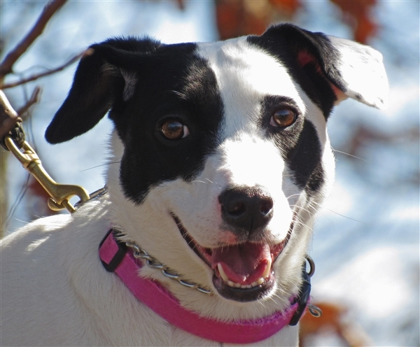
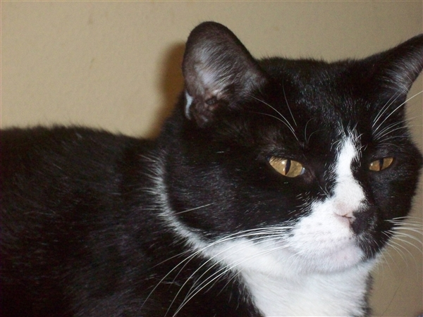

Available for Adoption

Amber
- Breed: Whippet & Labrador Retriever Mix
- Adult, Female, Medium
Health
- Vaccinations up to date, spayed / neutered.
About Amber
- Primary Color: White
- Secondary Color: Black
- Age: 2yrs 2mths 0wks
- Animal has been Spayed

Angel
- Breed: Labrador Retriever Mix
- Young Female Medium
Health
- Vaccinations up to date, spayed / neutered.
About Angel
My litter was found dumped in a ditch. We were rescued but he couldn't keep us. He had nowhere to keep us warm. I am sweet and a fast learner. I am pretty laid back for a puppy.
- Primary Color: Brown
- Secondary Color: Black
- Weight: 33.2lbs
- Age: 0yrs 6mths 3wks
- Animal has been Spayed

Boo
- Breed: Boxer Mix
- Adult Male Large
- HOUSE-TRAINED
Health
- Vaccinations up to date, spayed / neutered.
- PREFERS A HOME WITHOUT Cats.

Dodger
- Breed: Domestic Short Hair Mix
- Adult Male Small
Health
- Vaccinations up to date, spayed / neutered.
About Dodger
Hanging out at the golf course was fun, but it's a lot nicer inside! I've been here a few months and made new friends, but now I'm ready to find the right people to take me home.
- Primary Color: Black
- Secondary Color: White
- Age: 6yrs 9mths 1wks
- Animal has been Neutered

Zeke
- Breed: Coonhound & American Foxhound Mix
- Adult Male Medium
- HOUSE-TRAINED
Health
- Vaccinations up to date, spayed / neutered.
About Zeke
I am a very playful dog who is house trained and great with children. I get along with cats, male and female dogs. I am very Affectionate. I am here looking for a very special family so I can Love them and they can love me back.
- Primary Color: Black
- Secondary Color: Brown
- Weight: 50.4lbs
- Age: 4yrs 9mths 4wks
- Animal has been Neutered